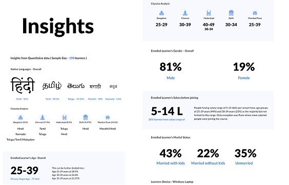
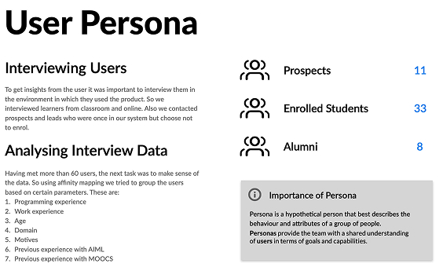
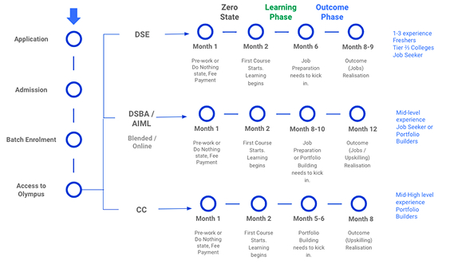

The Olympus LMS Enhancement
Cultivating Lifelong Learning Adventures
Empowering Dreams, Accelerating Careers
The digital economy demands professionals who are not just skilled, but future-ready. At Olympus, our mission is to deliver nothing less than career success for our diverse learners. Recognizing the need to elevate our learning platform, we embarked on a complete redesign of the Olympus LMS. an initiative rooted in a bold vision: to multiply learner success rates fivefold.
The success of this transformation is evident in the results, solidifying Olympus LMS as a dynamic, user-first learning environment.
The LMS was redesigned to serve a diverse cohort of Post-Graduate (PG) learners, both programmers and non-programmers with 0–25 years of work experience. The goal was to evolve from a functional platform into a structured, intuitive, and highly responsive digital campus that delivers an authentically personalized and efficient learning journey.
Key Impact Metrics
User Research & Stakeholder Insights
To grasp the system and how it operates, we engaged with key stakeholders overseeing the functions of AIML. This involved in-depth meetings with Vertical Heads, Learning Consultants, the Academic Operations Team, and Program Managers.
Through these stakeholder interviews, we gained insights into the company's mission of "Enabling Career Success in the Digital Economy" and its goal of making professionals proficient in their jobs and ready for the future. This shared vision drives the entire organization toward the ambitious target of achieving five times more successful learners compared to previous years.
Stakeholder Research & Vision Alignment
To grasp the system and how it operates, we engaged with key stakeholders overseeing the functions of AIML. This involved in-depth meetings with Vertical Heads, Learning Consultants, the Academic Operations Team, and Program Managers.
Through these stakeholder interviews, we gained insights into the company's mission of "Enabling Career Success in the Digital Economy" and its goal of making professionals proficient in their jobs and ready for the future. This shared vision drives the entire organization toward achieving five times more successful learners compared to previous years.
Google Analytics Data
Analytics data revealed behavioral patterns in learner engagement, helping us identify usage peaks, drop-off points, and the impact of content visibility across devices.
Learner Behavior Trends
Key insights from analytics and interviews guided the restructuring of learner dashboards for faster information access and improved engagement.
User Groups & Learner Segmentation
Once we had identified key user groups, the next step was to define their characteristics. We used data from application and lead forms to understand the proportional distribution of these groups, and complemented this with user interview insights to map motivations, goals, and friction points.
User Journey of Learners
Mapping the learner journey helped us pinpoint crucial pain points and opportunities within the existing LMS. These insights became the foundation for the redesign, ensuring the platform adapts to the learner, not the other way around.
Unlocking the Learner Journey & Addressing Friction Points
Mapping the learner journey exposed critical areas of friction that fragmented the experience. Resolving these pain points became the cornerstone of our redesign, ensuring the platform adapts to the user, not the other way around.
1. Lack of Course Visibility
Learners faced difficulty distinguishing between active, upcoming, completed, and incomplete courses, leading to confusion about their progress.
2. Inefficient Course Information Display
- Limited information on course cards made it challenging to understand course details at a glance.
- Missing marks and grades visibility affected learners' ability to track performance easily.
3. Navigation Issues on Course Details Page
- Complex navigation between tabs like Content, Recordings, Discussion, and Industry Focus.
- Unclear completion triggers caused confusion about progress tracking.
4. User Experience on Course Consumption Page
- Inefficient left navigation made accessing course modules and bookmarks difficult.
- Lack of interactive features like bookmarks and feedback options hindered engagement.
- Unclear categorization led to confusion about course status and progress.
5. URL Handling Challenges
Learners frequently encountered issues with invalid or partial URLs, leading to broken redirects and frustrating interruptions in the learning flow.
6. Quiz and Survey Functionality Limitations
- Complications in handling pre-submission and post-submission scenarios.
- Unclear attempt logic and inconsistent question formats.
- Timed quizzes caused unnecessary stress and usability issues.
7. Assignment / Project Submission Concerns
- Confusion around submission types, due dates, and upload processes.
- Lack of clarity in pre- and post-submission steps hindered learner confidence.
8. File Handling Issues
Learners faced challenges managing file types, icons, download options, and access restrictions within the LMS, disrupting smooth file handling and access.
9. Overall Learning Journey Complexity
The overall learning journey felt cumbersome due to compounded issues across visibility, navigation, submissions, and interactivity, resulting in a fragmented experience. A more structured and intuitive learning environment was essential to restore clarity and engagement.
Design Excellence & Implementation
A dedicated cross-functional team, comprising designers, developers, and a product manager, executed the transformation. Through rapid wireframing, prototyping, and iterative feedback, we ensured every design decision aligned with user needs and strategic business goals.
A small team was formed comprising myself, two other developers, and a dedicated product manager for the design and implementation phase. Our approach involved collaborative brainstorming sessions to discuss user requirements, system functionalities, and technical constraints, leading to a clear roadmap.
We began by creating wireframes and prototypes to visualise the user interface and gather stakeholder feedback, refining the user experience iteratively. Tasks were divided among team members based on expertise, fostering a collaborative environment where everyone contributed to success.
During implementation, we coded, tested, and integrated components while conducting regular code reviews and testing cycles to maintain quality. Close collaboration within the team and with the product manager ensured an agile development process aligned with project goals, resulting in a successful outcome.
While addressing the primary concerns of stakeholders and Users, we have also introduced several new features. These include Excelerate, aimed at boosting career growth and job opportunities, as well as Hackathons for practicing skills and competing with peers within the batch and across organisations.
Lofi Designs
Translating research insights into structure, we began with low-fidelity wireframes to define key layouts and interactions. This phase focused on optimizing the hierarchy, reducing friction, and ensuring that learners could navigate intuitively through their courses.
Final Designs
The high-fidelity designs bring together refined typography, improved navigation, and optimized information hierarchy, creating a seamless and engaging learner experience. Each element was designed to enhance usability while aligning with Olympus' visual identity and accessibility goals.

Validation and Rollout
Rigorous Usability Testing was a non-negotiable step. Over 50 learners participated across 19 defined tasks, allowing us to measure completion rates, timings, and friction points with precision. The overwhelmingly positive results required only minor refinements before rollout.
The new Olympus LMS was released in phased batches, achieving immediate adoption and high satisfaction. This validated a core design truth: The Olympus LMS stands today as a learner-first platform: a testament to design that listens, evolves, and empowers lifelong learning.
"Real impact begins when we stop expecting users to adapt to our product, and instead, reshape the product to adapt to their goals, behaviors, and challenges."